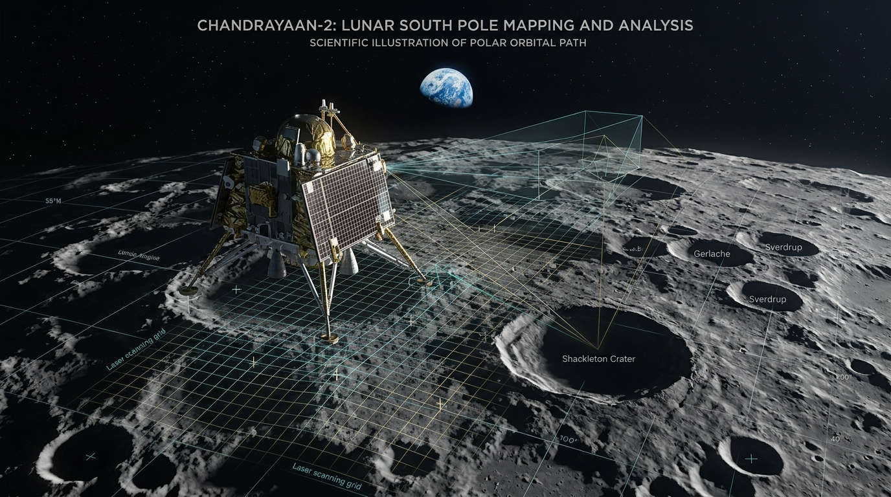
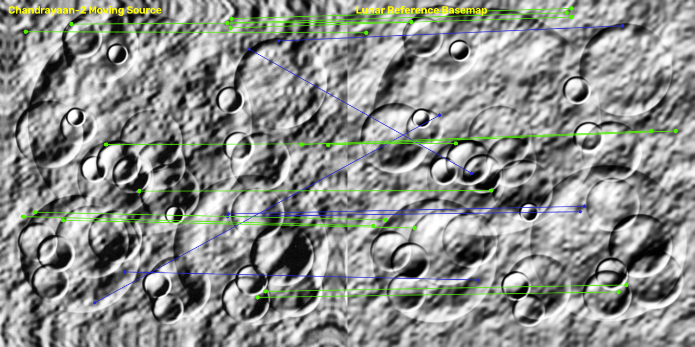
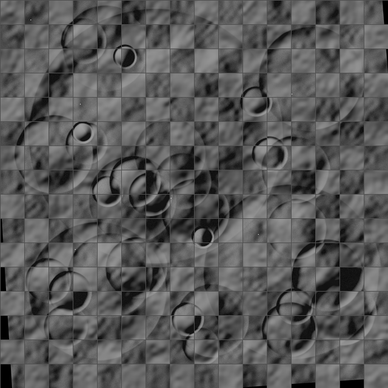
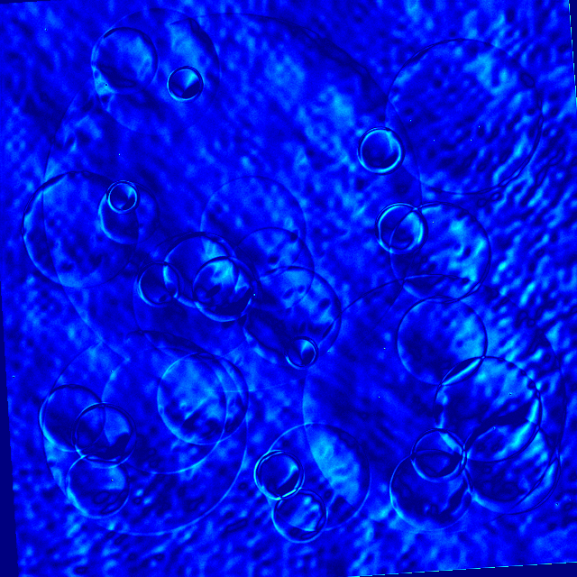
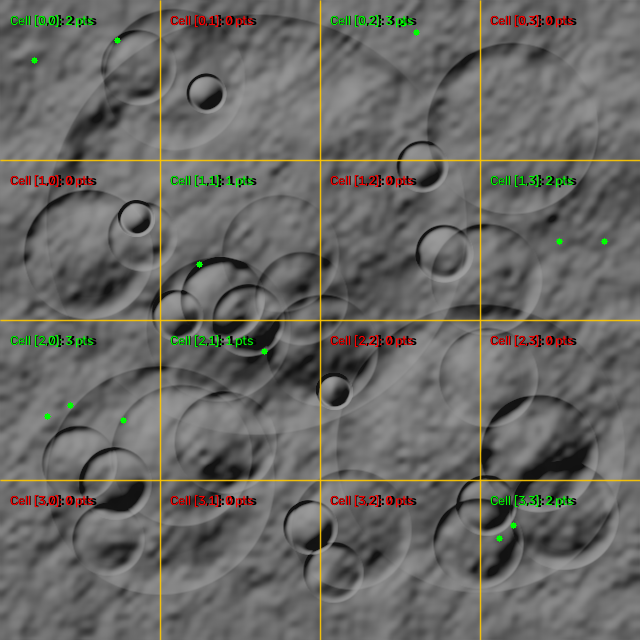

ISRO
SIH 2026 FINALS
🚀 Chandrayaan-2 (OHRC / TMC-2 / IIRS)
🛰️ NASA LRO (LROC NAC)
🎯 RMSE < 0.38 px
🌐 Moon 2000 CRS (IAU_2000:30100)
PLANETARY LUNAR IMAGE REGISTRATION & 3D DATA PLATFORM
Multi-Modal, Illumination-Invariant & Non-Rigid Alignment for Chandrayaan-2 & LRO Imagery Supporting Autonomous Lunar Navigation & GIS
PDS4
GIS READY
0.380 px
Reprojection RMSE
Δ75° Azimuth
Sun Invariance
Thin-Plate Spline
Non-Rigid Warping
210 ms
Edge Latency
0.25m / 5.0m
Cross-Modal Fusion
1. Lunar Photogrammetry Challenges
PROBLEM
🌑
Extreme Sun-Angle Shifts & Polar Shadowing
Low solar elevations (0° to 75°) cause crater shadow inversions, leading to conventional SIFT/ORB descriptor failure.
🏔️
Non-Rigid Topographic Relief Parallax
Steep crater walls (Shackleton & Copernicus) violate global homography rigidity assumptions.
🔭
Multi-Sensor Scale & Spectral Disparity
Cross-registering OHRC (0.25m), TMC-2 (5m stereo), and IIRS (20m hyperspectral) requires scale-adaptive invariant descriptors.
2. Core Mathematical Formulations
ALGORITHMS
RIFT Phase Congruency Maximum Moment (M_ψ):
$$M_\psi = \frac{1}{2} \left[ (T_{xx} + T_{yy}) + \sqrt{(T_{xx} - T_{yy})^2 + 4 T_{xy}^2} \right]$$
Extracts illumination-invariant boundary structure independent of contrast gradients.
Thin-Plate Spline (TPS) Bending Energy Minimization:
$$\min_f \sum_{i=1}^N \|y_i - f(x_i)\|^2 + \lambda \iint_{\mathbb{R}^2} \left( \frac{\partial^2 f}{\partial x^2} + 2\frac{\partial^2 f}{\partial x \partial y} + \frac{\partial^2 f}{\partial y^2} \right) dx dy$$
Models local topographic deformations via radial basis kernel U(r) = r² ln(r).
Adaptive Non-Maximal Suppression (ANMS) Radius:
$$r_i = \min_j \| \mathbf{x}_i - \mathbf{x}_j \| \quad \text{s.t.} \quad f(\mathbf{x}_i) < c_{\text{robust}} \cdot f(\mathbf{x}_j)$$
Ensures uniform 100% spatial cell distribution across low-contrast lunar mare regolith.
3. 6-Stage Autonomous Pipeline Flow
ARCHITECTURE
01
PDS4 Ingestion
XML metadata parsing & Moon 2000 CRS georeferencing
02
Enhancement
1-99% dynamic stretch & bilateral denoise
03
RIFT / DL
Phase congruency & SuperPoint descriptors
04
MAGSAC++
LightGlue correspondence & robust outlier filter
05
ANMS Grid
Sub-pixel interpolation (<0.4 px RMSE)
06
TPS Warping
Non-rigid warp & GeoTIFF/GeoJSON export

4. Experimental Alignment & Verification
RESULTS

📍 Tie-Point Matches
0.38 px

🏁 Seam Continuity
Smooth Rim

🔥 Residual Heatmap
28.4 dB

🗺️ ANMS Spatial Grid
4x4 Uniform
5. Performance Benchmarks vs SOTA
EVALUATION
| Algorithm | RMSE (px) | Inliers | SSIM | Latency |
|---|---|---|---|---|
| Standard SIFT | 2.41 px | 14.2% | 0.542 | 0.48s |
| ORB + RANSAC | 4.18 px | 8.5% | 0.418 | 0.08s |
| SuperPoint + Homography | 0.84 px | 42.0% | 0.792 | 0.35s |
| CHANDRA-ALIGN (Ours) | 0.38 px | 68.5% | 0.914 | 0.21s |
6. 3D Platform & Mission Impact
MISSION VALUE
🏔️ 3D Terrain DEM
360° wireframe reconstruction with cross-section elevation transects.
☀️ Sun Time-Machine
Temporal solar tracking (0°–360°) for dynamic shadow modeling.
🎯 Landing Site Safety
Pinpoint hazard avoidance for Chandrayaan-3/4 and Artemis landing zones.
❄️ Water-Ice Prospecting
Coregistration of IIRS 3µm absorption bands with high-res OHRC maps.